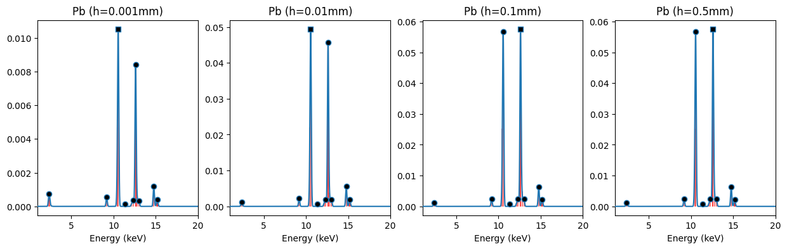

from moseley import ElementXRF
import matplotlib.pyplot as pltTheoretical peak patterns
Predicting elemental XRF (X-Ray Fluorescence) spectra
In order to unravel measured x-ray fluorescence (XRF) spectra it is essential to be able to compute the theoretical spectral emission patterns for individual elements. An XRF spectrum consists of a number of peaks whose positions/energies (expressed in kilo electron Volt) are specific for a given element. To a first approximation the intensities of the peaks are proportional the concentration of the element. However if we look with more scrutiny it turns out that the exact height proportions of the peaks varies with the thickness of the sample. Let’s skip the theoretical background and simply plot such an XRF spectrum. For now, simply import ElementXRF() and instantiate it for lead (Pb).
If you are interested in the physics behind this, you can find the gory details in a later section…
Plotting a theoretical X-ray fluorescence spectrum can be done with the .plot_spectrum() method.
# initialize plot
fig, axs = plt.subplots(ncols=4, figsize=[15, 4], sharex=True, sharey=False)
axs = axs.flatten()
# iterate over a list of different sample thicknesses
for h_mm, ax in zip([0.001, 0.01, 0.1, 0.5], axs):
Pb_xrf = ElementXRF('Pb', h_mm=h_mm)
Pb_xrf.plot_spectrum(facecolor='k', ax=ax, xlim=[1, 17], vlines_colors='r')
ax.set_title(f'Pb (h={h_mm}mm)')
ax.set_xlim(xmax=20)
We can see here that these spectra (blue with black markers) for lead consist of multiple Gaussian shaped peaks. Most of these peaks are the result of closely spaced emission lines (red color). Each emission line corresponds to a specific transition of an electron between different electron shells. Although these patterns for lead samples of different thicknesses look fairly similar, their precise proportions vary.
If you want to inspect emission lines in detail you can take a look the .lines_table attribute.
Pb_xrf.lines_table # 0.5mm| name | label | energy | trans_prob | fluo_yield | jump_coeff | attenuation | intensity | |
|---|---|---|---|---|---|---|---|---|
| 0 | Lb4 | Pb_L1M2 | 12.3070 | 0.338604 | 0.112000 | 0.135060 | 0.462812 | 0.002371 |
| 1 | Lb3 | Pb_L1M3 | 12.7950 | 0.401364 | 0.112000 | 0.135060 | 0.487145 | 0.002958 |
| 2 | Lg2 | Pb_L1N2 | 15.0991 | 0.114773 | 0.112000 | 0.135060 | 0.378123 | 0.000656 |
| 3 | Lg3 | Pb_L1N3 | 15.2175 | 0.145259 | 0.112000 | 0.135060 | 0.310437 | 0.000682 |
| 4 | Ln | Pb_L2M1 | 11.3490 | 0.018116 | 0.373000 | 0.285714 | 0.412679 | 0.000797 |
| 5 | Lb1 | Pb_L2M4 | 12.6140 | 0.787801 | 0.373000 | 0.285714 | 0.478221 | 0.040150 |
| 6 | Lg1 | Pb_L2N4 | 14.7657 | 0.165149 | 0.373000 | 0.285714 | 0.364340 | 0.006412 |
| 7 | Lg6 | Pb_L2O4 | 15.1793 | 0.028934 | 0.373000 | 0.285714 | 0.381387 | 0.001176 |
| 8 | Ll | Pb_L3M1 | 9.1840 | 0.037951 | 0.360000 | 0.600958 | 0.292015 | 0.002398 |
| 9 | La2 | Pb_L3M4 | 10.4490 | 0.076339 | 0.360000 | 0.600958 | 0.363219 | 0.005999 |
| 10 | La1 | Pb_L3M5 | 10.5510 | 0.683544 | 0.360000 | 0.600958 | 0.368916 | 0.054556 |
| 11 | Lb6 | Pb_L3N1 | 12.1432 | 0.010655 | 0.360000 | 0.600958 | 0.454454 | 0.001048 |
| 12 | Lb2,15 | Pb_L3N4,5 | 12.6007 | 0.169784 | 0.360000 | 0.600958 | 0.477560 | 0.017542 |
| 13 | Lb5 | Pb_L3O4,5 | 13.0143 | 0.021727 | 0.360000 | 0.600958 | 0.497792 | 0.002340 |
| 14 | Mg | Pb_M3N5 | 2.6538 | 1.000000 | 0.005047 | 0.137090 | 0.027508 | 0.000019 |
| 15 | Mb | Pb_M4N6 | 2.4443 | 0.997068 | 0.031350 | 0.209486 | 0.074410 | 0.000487 |
| 16 | Ma | Pb_M5N6,7 | 2.3423 | 1.000000 | 0.030775 | 0.430848 | 0.068258 | 0.000905 |
FUNCTIONS
get_attenuation
def get_attenuation(
element, emission_energy_keV, excitation_energy_keV:str='rhodium_Ka', h_mm:float=0.1
):
Attenuation factors for emissions at emission_keVs for pure sample with thickness h_mm.
See Thomsen_2007 equation 11.
Returns: att_list (array of floats)
plot_pattern
def plot_pattern(
ptrn_dict, ax:NoneType=None, offset:int=0, color:NoneType=None
):
Plot a single element peak pattern.
find_peaks
def find_peaks(
x, y, min_prom:float=0.001
):
Find peaks in spectrum x, y with minimal prominence min_prom=
Returns: peaks_xy
gaussian_convolve
def gaussian_convolve(
peak_energies, peak_intensities, x_keVs:NoneType=None, std:float=0.01
):
Convolves line spectrum defined by peak_energies and peak_intensities
with a Gaussian peak shape.
ElementXRF
def ElementXRF(
element, excitation_energy_keV:str='rhodium_Ka', h_mm:float=0.1, x_keVs:NoneType=None, std:float=0.01,
min_prom:float=0.001
):
Computes fluorescence emission line energies and intensities for element.